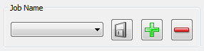
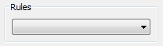

General Overview¶
Jobs¶
The fundamental object in Toucan is the job. Jobs are what tell Toucan which actions to perform and there are currently three supported job types, sync, backup and secure. Jobs can either be run in the graphical user interface (GUI) or on the command line. Jobs can also be associated with a set of Rules (see below). Jobs can either be ‘saved’ or ‘unsaved’, once saved they are given a name and can then be reloaded after restarting Toucan or run quickly from the command line.
Drag and Drop¶
Drag and drop is supported throughout Toucan. In any area that expects a file or folder path, such as the file lists and the text parts of the file and folder selectors supports items being dragged onto them from other programs, such as file explorers. If you drag multiple files and folders to a location that only supports one then the first item you selected will be used, if it is an area where multiple files and folders are supported then they will all be added.
Standard Job / Name Area¶

Most of the tabs in Toucan feature this standard area in their top-left. The drop down box shows any existing jobs or variables / rules / scripts and selecting one will load it. The first button is the save button, if you already have a name / job selected in the drop down then it will be saved. If you do not them you will be prompted to enter a new name. The next button is the add button. When clicked if you are currently working on a job you will be asked if you which to save it. Either way you will be asked to enter the name for your new job, starting a new job clears everything currently entered on the tab you are working on. The final button is the remove button, it deletes the job / variable / rule set / script you are working on and clears the current tab.
Standard Rules Area¶

The Sync, Backup and Secure tabs in Toucan all have a drop down box in the top left labeled Rules. In this box you will find a list of all of the sets of Rules you currently have. In Backup and Secure selecting one of the sets will cause any files and folders you have selected to immediately be coloured based on whether they will be included or not. In the Sync tab the Preview button must be used.
Tooltips¶
Throughout Toucan tooltips are alaiviable on all buttons that do not have their own text to help explain them. These toolitps can be turned off if required in the settings tab. The Sync preview panes also have a tooltip when you hover over a file or folder which gives a short description of the operation that Toucan plans to perform.